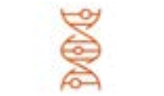
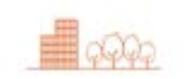

Compacte stad
Rotterdam ontwikkelt zich als een compacte, aantrekkelijke stad aan de rivier.
Een stad die onderdeel is van een grootstedelijk netwerk, met sterk openbaar vervoer en volop ruimte voor buitenleven. Rotterdam is en blijft een architectuurstad die durft te experimenteren door verdichting en vergroening op een slimme manier met elkaar te combineren. Een stad waar zoveel mogelijk passende voorzieningen voor iedereen op loop- en fietsafstand aanwezig zijn.
 | Nabijheid Een stad waar zoveel mogelijk passende voorzieningen voor iedereen op loop- en fietsafstand aanwezig zijn |
 | Binnenstad als city lounge De binnenstad ontwikkelt zich als een hoogwaardige plek voor ontmoeting, verblijf en cultuur |
 | Rauwheid en dynamiek De compacte stad bouwt voort op het unieke karakter van rotterdam: rauw en dynamisch |
Architectuurstad Bij de verdichting van de stad hebben we oog voor de kwaliteit van de architectuur en de waarde van cultuurhistorie | |
 | Mix stad en groen De verdichting en vergroening van Rotterdam gaan hand in hand |
Wat is een compacte stad?
In een compacte stad woon je in de buurt van werk, winkels, het openbaar vervoer en andere voorzieningen. Dit is alleen mogelijk wanneer de dichtheid van een stad groot genoeg is. Pas als op een plek genoeg mensen wonen, is er voldoende draagkracht voor voorzieningen en is het een aantrekkelijke vestigingsplek voor bedrijven. Compact ruimtegebruik in het haven- en industriecomplex zorgt ervoor dat elders ruimte voor woningbouw, natuur en andere functies aanwezig is. Door clustering van activiteiten binnen dit complex blijft de milieu-impact en daarmee de leefomgevingskwaliteit in de regio op een acceptabel niveau. In de compacte stad is het van belang ruimte zo goed mogelijk te benutten, bijvoorbeeld door multifunctioneel gebruik. Daarnaast leidt de hoge bevolkingsdichtheid in een compacte stad tot veel verplaatsingen. Om te voorkomen dat het vervuilende autogebruik toeneemt, is een sterk netwerk van openbaar vervoer en fiets- en wandelpaden belangrijk. De hogere dichtheid van woningen vraagt om genoeg ruimte voor ontmoeting, sport en spel.
Motivatie compacte stad
Waarom compacte stad een belangrijk perspectief is voor rotterdam.
Rotterdam is populair
Tien jaar geleden heeft Rotterdam ingezet op de verdichting van de bestaande stad. Dit heeft ervoor gezorgd dat Rotterdam compacter en aantrekkelijker is geworden. Maar de verdichting gaat niet snel genoeg. Er ontstaat een tekort aan woningen vooral voor bepaalde doelgroepen.
Er is meer vraag naar studentenhuisvesting, grotere studio’s, kindvriendelijke appartementen, zorggeschikte woningen voor ouderen en grondgebonden eengezinswoningen. Vooral onder huishoudens met een modaal of hoger inkomen, sociale stijgers en ‘young professionals’ neemt de vraag naar een passende woning toe. Rotterdam heeft zowel een gebrek aan centrum-stedelijke als ook aan groen-stedelijke woonmilieus. Hierdoor trekken veel jonge gezinnen uiteindelijk weg uit de stad, terwijl ze er graag zouden blijven wonen.
Behoefte aan rust
Levendigheid is een wezenlijk kenmerk van Rotterdam. Rotterdammers zijn trots en blij met het groeiend aanbod van vertier, maar ze maken zich ook zorgen om de drukte. Naast de stedelijke reuring hebben ze ook behoefte aan plekken waar ze tot rust kunnen komen en zich kunnen ontspannen, zowel in de stad als in de regio. Groene en aantrekkelijke buitenruimte speelt hierin een belangrijke rol: om te spelen, te bewegen, om met elkaar in contact te komen en om rust te vinden. De roep om groen klinkt daarom luider. Hoewel Rotterdam relatief veel groene buitenruimte per inwoner heeft, is het groen niet altijd goed bruikbaar en ligt het ook niet altijd op een logische plek. Rotterdam ziet veel kansen om langs de Nieuwe Maas een nieuwe blauw-groene structuur te ontwikkelen die het centrum en de wijken verbindt met de rivier. Ook de Nieuwe Waterweg, de Rotte en de Schie zijn belangrijke dragers voor groene aantrekkelijke buitenruimte.
Openbaar vervoer en de fiets
Het autogebruik in Rotterdam neemt af. Rotterdammers stappen vaker op de fiets of gaan met het openbaar vervoer. Het gebruik van de fiets in het centrum is de afgelopen tien jaar met 60% gestegen. En ook het aantal metroreizigers neemt toe, mede door de aansluiting van het netwerk op de Randstadrail naar Den Haag. Op metrostation Beurs komen dagelijks al meer reizigers dan op het treinstation van Arnhem. Verdichting van wonen en werken zou daarom plaats moeten vinden rondom bestaande stations zoals Melanchtonweg, Kralingse Zoom, Prins Alexander en ook nieuw te ontwikkelen stations (Stadionpark, Spaanse Polder). Daarnaast is het voor de fietser van belang dat er goede fietsverbindingen zijn tussen de verschillende stadskernen.
Nieuwe economie
De transities zoals eerder genoemd hebben een grote invloed op de Rotterdamse economie. Daarom ligt er een taak om in te spelen op de behoeften van nieuwe en opkomende economische sectoren. Economische kansen liggen vooral in slimme verbindingen en samenwerkingsverbanden tussen diverse sectoren. Rotterdam wil daarom fysieke plekken creëren rondom toplocaties waar verschillende bedrijven elkaar kunnen ontmoeten die samen nieuwe diensten of producten kunnen ontwikkelen. Op deze manier ontstaat er een nieuwe economie naast de oude met nieuwe niches en werkgelegenheid als resultaat.
Elly woont in een compacte stad
Elly (67 jaar) heeft sinds een jaar geen auto meer. ‘Scheelt toch behoorlijk in de kosten en ik gebruikte hem maar weinig. Alles wat ik dagelijks nodig heb, kan ik lopend of op de fiets bereiken, zoals de supermarkt, de yogastudio en het Concertgebouw de Doelen. Als ik ga oppassen, pak ik gewoon de metro naar mijn dochter en de kleinkinderen in Nesselande.’ Elly is verknocht aan de rauwheid en de dynamiek van de stad. Ook is ze trots
op iconen als de Markthal en de Erasmusbrug. Rotterdam is de afgelopen tien jaar drukker en voller geworden, maar ook leefbaarder. ‘Zo fijn dat ik sinds kort een groen parkje om de hoek heb. Wanneer het in de zomer erg warm is op mijn balkon, ga ik daar lekker in de schaduw zitten met een goed boek. Ik vind het heerlijk om naar spelende kinderen en kletsende jongeren te kijken.’
Dit personage is fictief en bedoeld ter illustratie. Het voorbeeld geeft weer hoe het perspectief beleefd kan worden en hoe de doorvertaling van de omgevingsvisie in een later stadium gemaakt kan worden.